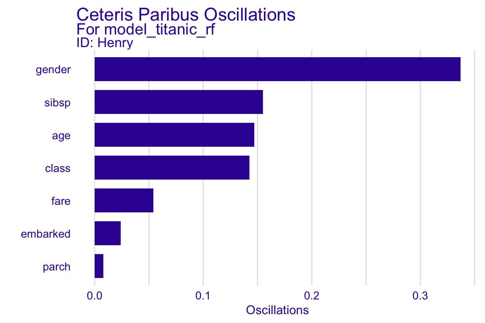

Chapter 3 Variable attribution for linear models
In this section we introduce the concept and the intuition behind additive decompositions of model predictions. The main goal for these tools is to help to understand how model output may be decomposed into parts, that can be attributed to input features.
Presented explainers are linked with the first law introduced in Section 2.2, i.e. law for prediction’s justifications. Note that there is a collection of tools for variable attribution. In this section we are focused on the general idea and examples for linear models. Model agnostic approaches will be presented in sections 4 and 6.
Think of following use cases:
- Think about a model for heart attack. A patient wants to know which factors have highest impact on the final heart risk score.
- Think about a model for apartment prices. An investor wants to know how much of the final price may be attributed to the location of an apartment.
- Think about a model for credit scoring. A customer wants to know if factors like gender, age or number of kids influence model decisions.
In every usecase one needs to attribute part of the model response to a single variable. This can be done directly for linear models, so in the section ?? we show how to do this for linar models and may be easily extended to additive models and generalized linear models. For other models it is not trivial how to do so, some approaches are be presented in next sections.
3.1 Intuition
Fiited linear model with coefficients \(\beta = (\beta_0, \beta_1, .., \beta_p)\) has following form.
\[ f(x) = \beta_0 + x_1 \beta_1 + \ldots + x_p \beta_p. \] In other words, model response is the sum of weighted elements of \(x = (x_1, x_2, \ldots, x_p)\).
From a global perspective of a model, we are usually interested in questions like, how good is the model (questions about \(R^2\)), which variables are significant (tests for significance of \(\beta_i \neq 0\)) or how accurate are model predictions (confidence intervals for predictions).
But in this chapter we are focued on a local perspective, i.e. for a single observation \(x^*\) how to measure the contribution of a variable \(x_i\) on model prediction \(f(x^*)\).
The contribution of a variable \(x_i\) shall be related to \(x^*_i\beta_i\) as variable \(x_i\) occur only in this term. As we will see below, it is easier to interpret variable contribution if the \(x_i\) is centered.
This lead for a intuitive formula for variable attribution for model \(f\), variable \(x_i\) in the point \(x^*\) \[ v(f, x^*, i) = \beta_i (x_i^* - \hat x_i). \]
3.2 Method
We want to calculate \(v(f, x^*, i)\), which is the contribution of variable \(x_i\) on prediction of model \(f()\) in point \(x^*\).
Geneal approach for calculation of variable attributions would be to measure how much the expected model response would change after conditioning on \(x_i = x_i^*\).
\[ v(f, x^*, i) = E[f(x) | x_i = x_i^*] - E[f(x)] \]
For linear models, if coordinates of \(x\) are independent, this is equivalent of
\[
v(f, x^*, i) = f(x^*) - E[f(x)|x_{-i} = x^*_{-i}] = \beta_i x^*_i - E \beta_i X_i.
\]
Expected value can be estimated as averages, and this leads to
\[
v(f, x^*, i) = \beta_i x^*_i - \beta_i \bar x_i = \beta_i (x^*_i - \bar x_i)
\]
The logic behind the attribution is the following. Contribution of variable \(x_i\) is the difference between model response for value \(x_i^*\) minus the average model response.
Note that the linear model ma be rewritten in a following way
\[ f(x) = baseline + (x_1 - \bar x_1) \beta_1 + ... + (x_p - \bar x_p) \beta_p \]
where \[ baseline = \mu + \bar x_1 \beta_1 + ... + \bar x_p \beta_p. \]
Here \(baseline\) is an average model response and variable contributions show how prediction for particular \(x^*\) is different from the average response.
** NOTE for careful readers **
There is a gap between expected value of \(X_i\) and average calculated on some dataset \(\bar x_i\). The latter depends on the data used for calculation of averages. For the sake of simplicity we do not emphasize these differences. To live with this just assume that we have access to a very large validation data that allows us to calculate \(\bar x_i\) very accurately.
Also we assumed that coordinated of \(x\) are independent, which may not be the case. We will return to this problem later, during the discussion related to interactions.
3.3 Example: Wine quality
It may be a surprise, that the attribution for variable \(x_i\) is not the \(\beta_i x_i\). To understand this, consider following example.

Figure 3.1: (fig:attribution1)Relation between wine quality and concentration of alcohol assessed with linear model
Figure 3.1 shows the relation between alcohol and wine quality, based on the wine dataset (Cortez et al. 2009). The corresponding linear model is
\[ quality(alcohol) = 2.5820 + 0.3135 * alcohol \]
The weakest wine in this dataset has 8% of alcohol, average alcohol concentration is 10.51, so the contribution of alcohol to the model prediction is \(0.3135 *(8-10.51) = -0.786885\). It means that low value of alcohol for this wine (8%) lower the prediction of quality by \(-0.786885\).
Note, that it would be confusing to use \(x_i\beta_i\) as alcohol contribution on quality would be \(0.3135*8 = 2.508\). This would not reflect the intuition that for positive relation, the smaller is the alcohol concentration the lower should be the quality of wine.
3.4 Pros and Cons
Here we summarise pros and cons of this approach.
Pros
- Presented variable attribution for linear model is not an approximation, it is directly linked with the structure of a model.
- It is easier to understand attributions that are not linked with scale nor location of \(x_i\) as the standard \(\beta_i\) are.
Cons
- It works only for linear models.
- This do not reduce model complexity. Just present model coefficients in a different way.
3.5 Code snippets
Variable attributions for linear models may be directly extracted from the predict() function for linear models.
In this section we will present an example for logistic regression based on the HR dataset. See the Section 16.1 for more details.
First we build a logistic regression model for binary variable status == "fired". Here are fitted model coefficients.
library("DALEX")
model_fired <- glm(status == "fired" ~ ., data = HR, family = "binomial")
coef(model_fired)## (Intercept) gendermale age hours evaluation
## 5.737945729 -0.066803609 -0.001503314 -0.102021120 -0.425793369
## salary
## -0.015740080We want to calculate variable attributions for a particular point. Here we define this point.
new_observation <- data.frame(gender = factor("male", levels = c("male", "female")),
age = 57.7,
hours = 42.3,
evaluation = 2,
salary = 2)For linear and generalized linear models we may specify argument type = "terms" that extracts variable contributions.
## gender age hours evaluation salary
## 1 -0.03361889 -0.02660691 0.7555555 0.5547197 0.007287334
## attr(,"constant")
## [1] -0.8714962Below we show how to do this with the DALEX package. Additionaly we may easily plot contributions.
library("DALEX")
explainer_fired <- explain(model_fired,
data = HR,
y = HR$status == "fired",
label = "fired")
attribution <- single_prediction(explainer_fired, new_observation)
attribution## variable contribution variable_name variable_value
## 1 (Intercept) -0.871496150 Intercept 1
## hours hours = 42.3 0.755555494 hours 42.3
## evaluation evaluation = 2 0.554719716 evaluation 2
## gender gender = male -0.033618893 gender male
## age age = 57.7 -0.026606908 age 57.7
## salary salary = 2 0.007287334 salary 2
## 11 final_prognosis 0.385840593
## cummulative sign position label
## 1 -0.8714962 -1 1 fired
## hours -0.1159407 1 2 fired
## evaluation 0.4387791 1 3 fired
## gender 0.4051602 -1 4 fired
## age 0.3785533 -1 5 fired
## salary 0.3858406 1 6 fired
## 11 0.3858406 X 7 fired
References
Cortez, Paulo, António Cerdeira, Fernando Almeida, Telmo Matos, and José Reis. 2009. “Modeling Wine Preferences by Data Mining from Physicochemical Properties.” Decision Support Systems 47 (4):547–53. https://doi.org/10.1016/j.dss.2009.05.016.